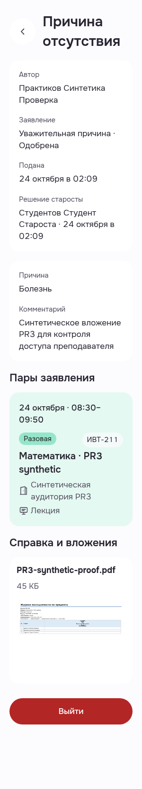
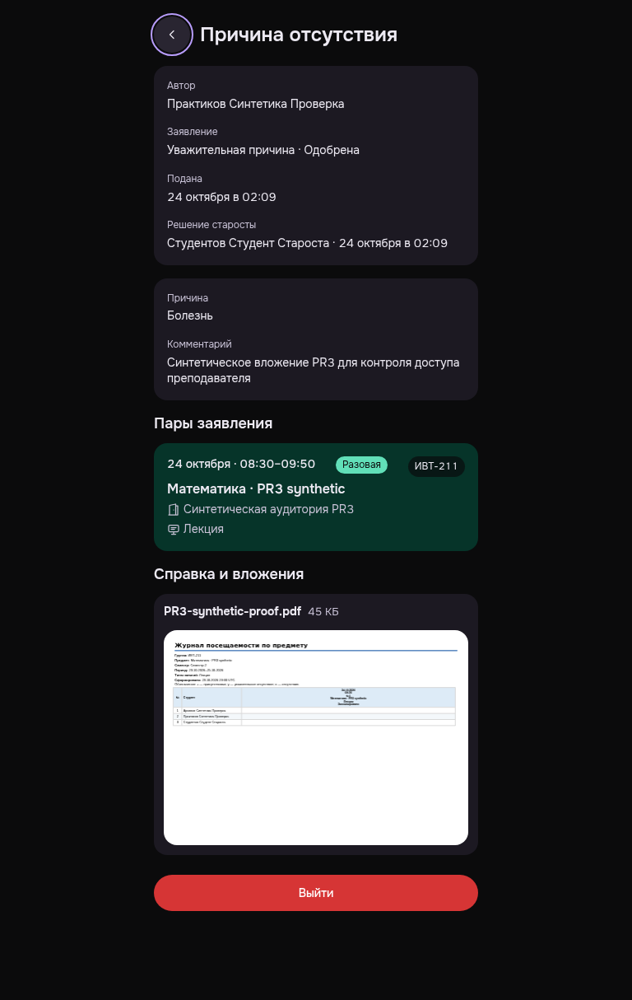

Преподаватель: исправленная карточка и первая страница PDF
Дата и время читаются при300/root20, широкий вариант сохранён. Первая страница синтетического PDF действительно отрисована в обоих кадрах.
Changed presentation AFTER2 only; rawEXIT0/errors0/ownDELETE204+401/browserclosed/noHOLD. Old nativeBack result reused; Back activation0, raw flagfalse/NOT_RECHECKED retained. One optional natural PDF observer≤7s with readycanvas369x261, followed by personally inspected firstpage in both original PNGs. No APIretry/Open/download/allpages/zoom/TMA provider claim. Both screenshots fullpage:300x1651 and768x1214, viewportheight900 recorded separately. Only selected PWA presentation states; no whole-screen/all-state/width readiness.
Manifest · Критерии и ограничения
Причина отсутствия · metadata wrap AFTER · light · 300/root20
Date24Oct and time08:30–09:50 read naturally across two lines; oneoff/groupchips nextrow; no verticalcharacters or horizontaloverflow. Approvedticket content and syntheticPDFfirstpage visible; no credentials.
PWA-MOBILE-TEACHEREXCUSE__MB-TE-AF01-after-approved-ticket-metadata-wrap__light__300__root20__7bbef7252
revision 7bbef7252a338005b380d8e07a7eb8075ac6b243
SHA256 23d620b9f17df730378756ba2db08929e1717c16af8051fbe2baf45a79808151

Причина отсутствия · unchanged wide metadata AFTER · dark · 768 · Back focus
WideTeacherLessonCard date/time/chips remain singleline likeBEFORE; Backkeyboardfocus visible butnotactivated. Readyfirstpage shows syntheticattendancejournal/knownsyntheticnames; no credentials.
PWA-MOBILE-TEACHEREXCUSE__MB-TE-AF02-after-same-ticket-back-keyboard-focus__dark__768__root16__7bbef7252
revision 7bbef7252a338005b380d8e07a7eb8075ac6b243
SHA256 f0959994ed1591981b1e79708a009fdd586646664c8c21ee51a66fddcb84b48b
